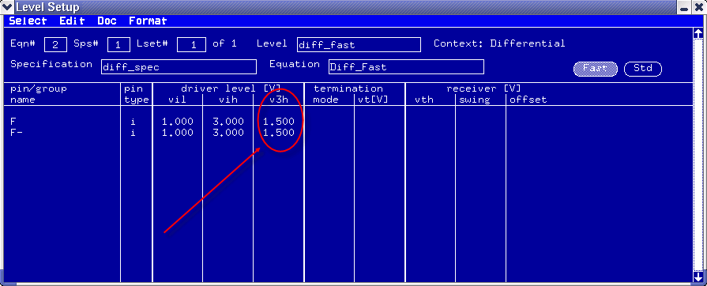

How to use the Dynamic Driver High Level Shift (v3h) feature for fast mode pins
For fast mode i pins, you can dynamically shift the high level to a different value within a signal pattern. This topic introduces how to use this feature by setting the v3h in the level equations.
Before you begin
Make sure that you have opened the Level Setup window.
Procedure
Results
In the Level Setup window for fast mode pins, the driver level [V] v3h column shows the voltage of v3h.

What to do next
Set up the special vector characters i and o in the pattern debug tool for the section of the pattern that you wish to shift in level.